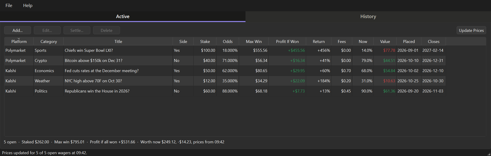
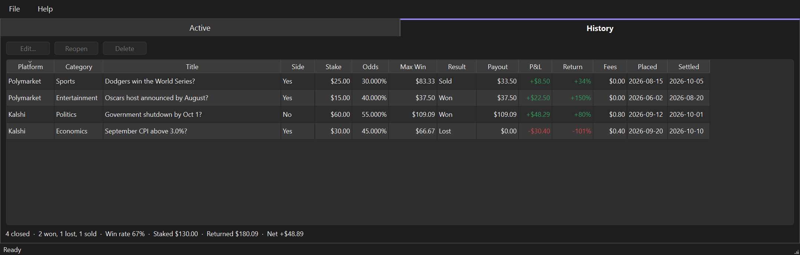
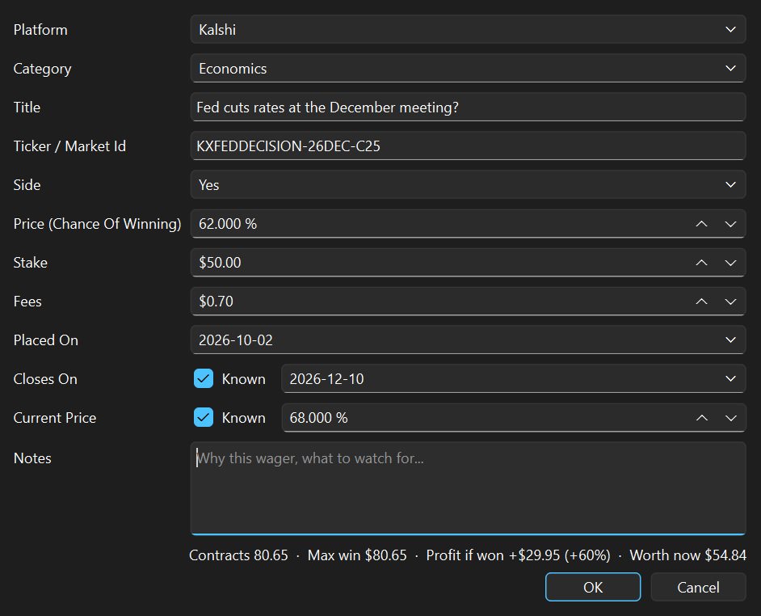
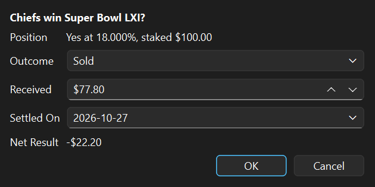
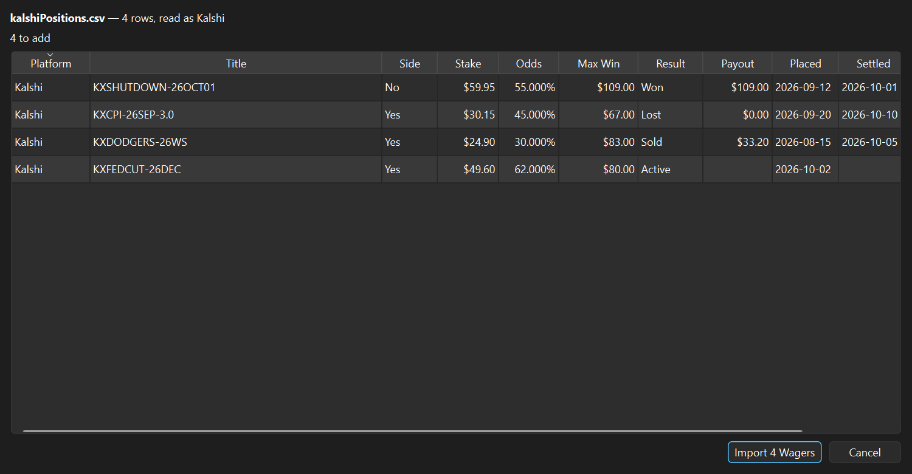
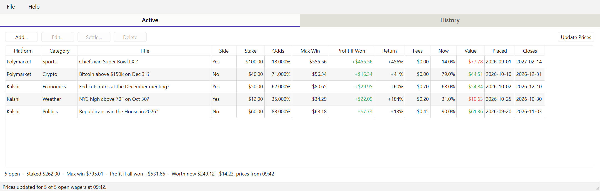

Wager Book keeps your Kalshi and Polymarket wagers side by side: what you staked, the odds you got, the most each can pay, what it is worth today, and what every closed wager actually paid. One table, both sites, the whole history.
Version 0.8.1 · Windows and macOS · free and open source · your book stays on your own machine

Each site shows its own positions, in its own words, and a wager that has closed slips into a history list you have to dig for. Neither can tell you how you are doing across both.
Wager Book is the record the sites leave out: one place for every wager, open or closed. Open wagers sit on the Active tab with today's sell price beside what you paid. When a market resolves you settle the wager with what actually came back, and it moves to History, where the win rate and the net result add up on their own.
The arithmetic is the sites' own. Both sell contracts that pay $1 when your side is right, so the price you paid is the market's chance of winning, the stake buys a number of contracts, and the most a wager can pay is one dollar per contract. Wager Book works it out as you type and shows its working in the manual.
A Kalshi Senate race next to a Polymarket Super Bowl market, in the same columns, sorted however you like.
Every won, lost, sold and voided wager, with its payout and P&L, and a win rate that counts only the markets that were actually decided.
Update Prices asks both sites what each position could be sold for now - the bid, not the last trade - so the book never flatters a wager.
Four steps from an empty book to one that keeps itself current.

Everything the application does, in the order you meet it.
Windows. Run wagerBookSetup-0.8.1.exe. It installs for your
user account only, so there is no administrator prompt and nothing lands in
Program Files. If you would rather not install anything, take the portable zip
instead, unpack it anywhere and run WagerBook.exe from the folder.
macOS. Unzip and drag WagerBook.app to Applications.
macOS will refuse it the first time. The app is not code-signed, which
needs a paid Apple Developer account this project does not have. Right-click the app and
choose Open — that dialog has a button the plain double-click does not.
Or clear the flag from a terminal: xattr -dr com.apple.quarantine WagerBook.app.
Installing a newer version replaces the old one. Your book is kept in your own user folder, apart from the application, so upgrading or uninstalling never touches your wagers.
Active holds every wager that has not been settled yet. History holds every one that has: won, lost, sold early, or voided. Settling a wager moves it from one tab to the other, and Reopen moves it back.
The line under each table adds up what is in it. Under Active: how many are open, the total staked, the most they could pay, the profit if every one won, and what the priced ones are worth now. Under History: the outcomes, the win rate, what went in, what came back and the net result.
Click Add… on the Active tab, or press Ctrl+N.

| Field | What to put in it |
|---|---|
| Platform | Kalshi or Polymarket |
| Category | Politics, Sports, Economics and so on; type your own if none fits |
| Title | The market question, as the site words it. For a race with several candidates, include your candidate's name |
| Ticker / Market Id | Paste the market's web address, or type its ticker. Needed for Update Prices |
| Side | Yes or No — the side you bought |
| Price | What you paid per contract, as a percent to a thousandth: 40.000 % is 40 cents |
| Stake | The dollars you put in |
| Fees | What the site charged, if you keep it separate from the stake |
| Placed On, Closes On | When you bought, and when the market is expected to resolve |
| Current Price | Filled in by Update Prices; type one only for a market it cannot reach |
| Notes | Why you took it, what to watch for |
Both sites sell contracts that pay $1 if your side is right and nothing if it is not. Everything in the table follows from that:
| Column | Worked out as |
|---|---|
| Odds | The price you paid per contract - the market's chance that your side wins |
| Max Win | Stake ÷ Price: the number of contracts, each worth $1 |
| Profit If Won | Max Win − Stake − Fees |
| Return | Profit If Won ÷ Stake |
| Now | What one contract could be sold for today |
| Value | Contracts × Now |
A worked example: $99.99 on Yes at an average of 11.685 cents.
A No wager uses the No price: buying No at 70 cents is a 70% chance in the market's eyes, not 30%.
Fees and the average price. Kalshi takes its trading fee when your order fills and includes it in the cost, so its "average price" sits a little above the price you bought at. Enter the cost as the stake with fees at $0, or split them - the profit if won comes out the same either way.
A wager can only be priced once the app knows which market it is. Open the wager (double-click it), click in Ticker / Market Id, and paste the address of the market's page from your browser:
The app reads the address as you leave the box, fills in the market's id and sets the platform. Typing a Kalshi ticker or a Polymarket id directly works too.
Many addresses name a whole race, not one candidate. The app picks the candidate whose name is in the wager's title - "Texas Senate winner? - Ken Paxton" finds Ken Paxton - and stores that market's own id, so the next update goes straight to it. A middle initial on the site ("Susan M Collins") still matches a title without one.
Click Update Prices above the Active table, or press F5. The app asks Kalshi and Polymarket for the current price of every linked wager. It takes a second or two, and the window stays usable while it runs. Both sites publish prices publicly, so no login or API key is involved and nothing about your account is sent.
The price taken is the one you could sell at right now: the best bid for the side you hold. That is what Kalshi's Cash Out uses, and it never flatters a position the way the last trade or the asking price can.
| Value colour | Meaning |
|---|---|
| Green | Worth more now than it cost, stake and fees together |
| Red | Worth less now than it cost |
| Plain | Break-even to the cent, or no price yet |
Rest the pointer on a Now or Value cell to see when its price was fetched and the gain or loss in dollars. The line under the table says how many prices were fetched and how old the oldest one is, so a price typed in by hand is never passed off as today's.
When a market resolves, select the wager on the Active tab and click Settle…. Choose the outcome and the usual payout is filled in - the full Max Win for a win, nothing for a loss, the stake back for a voided market - and can be changed to what actually arrived. For a position you sold before the market resolved, choose Sold and enter what you got for it.

Settled by mistake? Select it on the History tab and click Reopen.
File › Import CSV… reads wagers out of a file so they do not have to be typed one at a time. A preview shows how many rows will be added, how many are already in the book, and every row it could not read with the reason. Nothing reaches the book until you click Import.

activity.csv the importer reads.Sells and redemptions are listed rather than imported - settle the matching wager instead - and a row for the same market, side and day as one already in the book is skipped, so importing a file twice adds nothing. File › Export CSV… writes every wager to a file for a spreadsheet or a backup.
Double-click a row, or select it and click Edit…, to change any field. A price you leave alone keeps every digit it had. Delete asks first and removes the wager for good; a wager that lost should be settled as Lost instead, so the History totals stay true.
Click a column heading to sort by it, and again to reverse. Money columns sort by amount, not by the text. A highlighted row clears as soon as you click anywhere else.
Help › Theme chooses light, dark, or whatever your system is set to, which is the default. The window reopens where you last closed it, at the same size.

Help › User Manual (F1) opens the manual on GitHub, and falls back to the copy inside the application when there is no network.
The whole book is one file, wagers.json, in your own user folder - on Windows,
%APPDATA%\Wager Book. It is rewritten through a temporary file on every change, so
a crash mid-save leaves the previous book intact. Copy it to back it up.
settings.ini beside it remembers the theme and the window's position. Delete it
to start from the defaults; your wagers are not in it.
It has no ticker yet, or the race it names has several candidates and none of their names is in the title. The box lists the choices: add the name to the title, or paste the candidate's own market address.
The computer is offline, or a firewall blocks the app. Nothing was changed; try again once the connection is back.
Check the address came from the exchange you trade on - Polymarket US and polymarket.com are different markets. And remember the app shows the sell price, a little below the buy price the site's buttons show.
If wagers.json was damaged the app says so at start-up and opens empty without
overwriting it. Move the file aside, or fix it in a text editor, and start again.
A record of your bets is personal, so it is worth being explicit about where it goes - which is nowhere.
One file in your own user folder. No account, no cloud copy, no telemetry.
It never asks for your Kalshi or Polymarket password or an API key, and never sees your account.
Update Prices reads the sites' public market data, naming only the markets you linked. Nothing about you is sent with it.
Wager Book records wagers. It cannot buy, sell or move money, on either site.
Removing or upgrading the app leaves your wagers where they are.
MIT licensed, and the full source is public, so anyone can check what it does.
Wager Book is an independent tool and is not affiliated with, endorsed by or connected to Kalshi or Polymarket. Prices are read from their public data as published and can be delayed or wrong; nothing in the app or on this page is financial advice. Trade only what you can afford to lose.
Free, no account, no ads, no telemetry. You do not need Python or anything else installed.
About 34 MB. Installs for your user only, so there is no administrator prompt. Adds a Start menu entry and an optional desktop shortcut.
Download for WindowsAbout 49 MB zipped. Nothing is installed: unpack it anywhere, including a USB stick, and
run WagerBook.exe.
About 38 MB zipped. Unzip and move WagerBook.app to Applications. See the
note about Gatekeeper before the first run.
Every link opens the GitHub release page — scroll to Assets and pick the file for your system. Each build is produced by a public workflow straight from the source, and checks itself before it is published.
Wager Book is free. No ads, no account, no telemetry, and your book never leaves your machine — the only thing it ever asks the internet for is the public price of a market you linked. That is how a small desktop tool ought to work, and it is also why tools like it are hard to sustain: there is no data to sell and no subscription to bill, so nothing pays for the work behind them.
The hard part of a tool like this is not writing it, it is keeping it right. The sites change their pages, their exports and their market data without notice, and a book is only useful while its numbers can be trusted. Linking prices to the right exchange turned up that Polymarket US and polymarket.com quote different prices for the same race — caught, fixed and covered by a test before it misled anyone. That is the kind of attention a donation pays for, along with the next free tool.
If Wager Book saved you a spreadsheet, or showed you how your wagers are really doing, please consider chipping in.
Secure payment through PayPal — no account required, any amount appreciated. Thank you for supporting independent, privacy-respecting software.